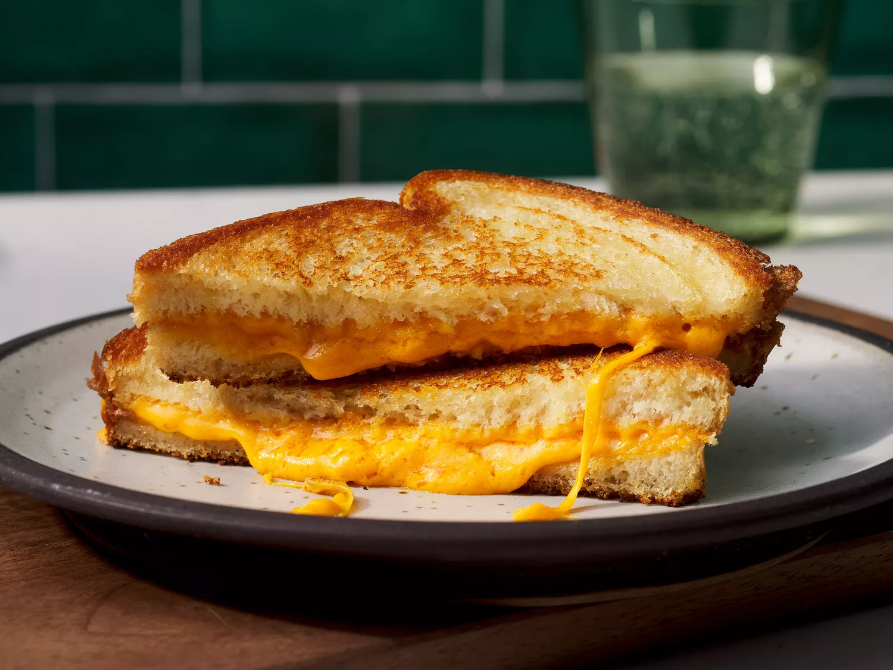

Home
Grilled Cheese Sandwich Recipe

Everyone needs to know how to make a classic grilled cheese sandwich. Whether you're a beginner cook or an old pro, you'll come back to this top-rated grilled cheese recipe again and again.
Ingredients
- 4 slices white bread
- 3 tablespoons butter, divided
- 2 slices Cheddar cheese
Steps
- Gather all your ingredients.
- Preheat a nonstick skillet over medium heat. Generously butter one side each bread slice.
- Place 1 slice bread, butter-side down, in the hot skillet; top with 1 slice cheese.
- Place 1 slice bread, butter-side up, on top cheese.
- Cook until lightly browned on one side; flip and continue cooking until cheese is melted.
- Repeat with remaining bread and cheese slices. Serve and enjoy!